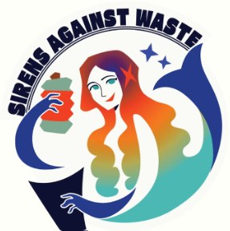
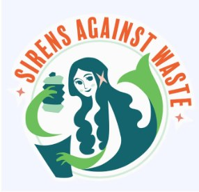

← All projects
Brand identity / Social media / Illustration
Sirens Against Waste
A fictional coastal cleanup initiative designed to make environmental awareness inviting, recognizable, and visually engaging.

The project
Project overview
A brand identity and campaign concept for a fictional organization encouraging community participation and awareness of ocean pollution. This project explores an illustrative logo system and cohesive visual applications.
Project typeBranding, illustration, mockups
SoftwareAdobe Illustrator, Photoshop, Canva
Visual identity
Meet the siren.
A bright illustrated character and curved lettering give the campaign a memorable, approachable identity.



Next steps for this case study
Bring the work to life.
Add your full-resolution brand mockups, social media graphics, and a short explanation of the design choices you made. This section is intentionally a starting point.
← Back to selected work